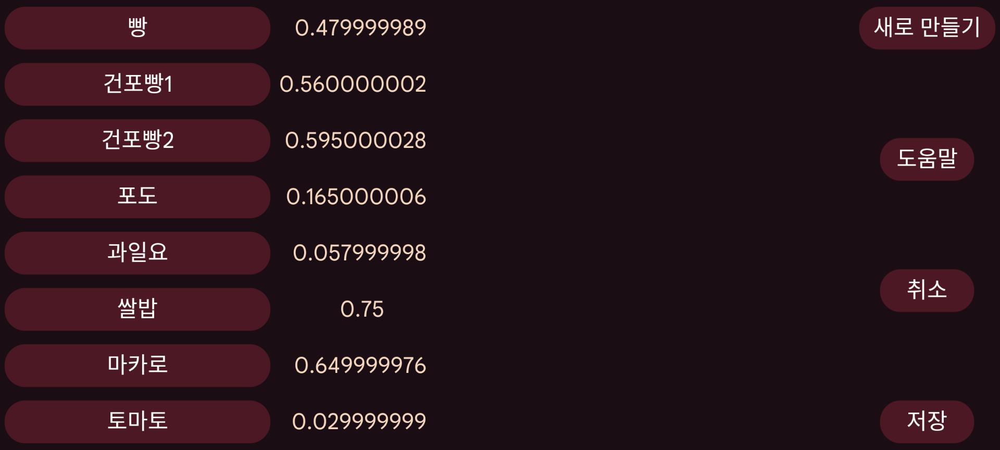

바로가기 는 Kerfstok에서 사용할 수 있습니다.
워치의 숫자 입력 화면에서 바로가기 화면으로 이동할 수 있습니다(제 Vivoactive 3에서는 왼쪽으로 스와이프). 여기에는 레이블 목록이 표시되며 하나를 누르면 해당 값이 숫자 화면에 삽입됩니다. 값은 숫자일 수도 있고 숫자와 산술 연산자를 조합한 것일 수도 있습니다. 예: *0.5는 0.5를 곱합니다.
이 설정 메뉴에서 바로가기를 만들고 삭제하고 편집할 수 있습니다.
기존 바로가기 목록 이 왼쪽에 표시됩니다. 하나를 누르면 바로가기를 삭제하거나 레이블 또는 값을 변경할 수 있는 화면이 나타납니다.
새 바로가기는 새로 만들기로 만듭니다.
변경 사항은 저장 버튼을 눌러야 저장됩니다.